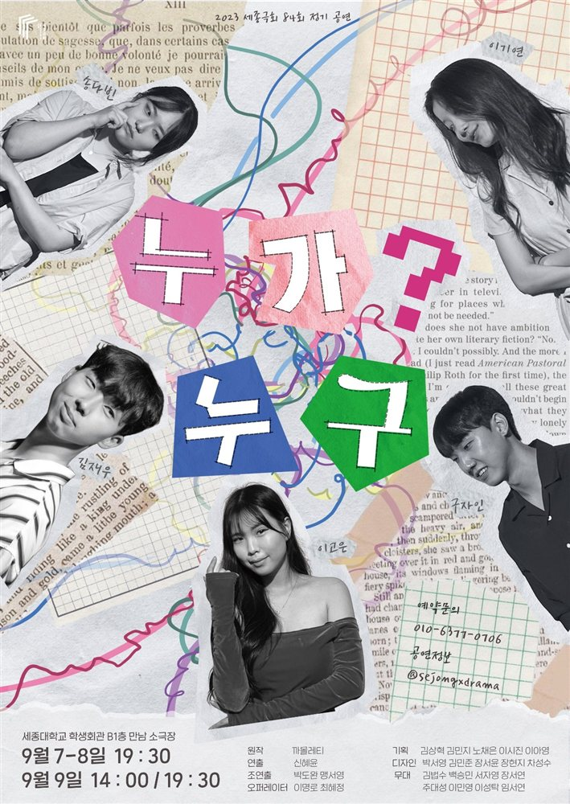
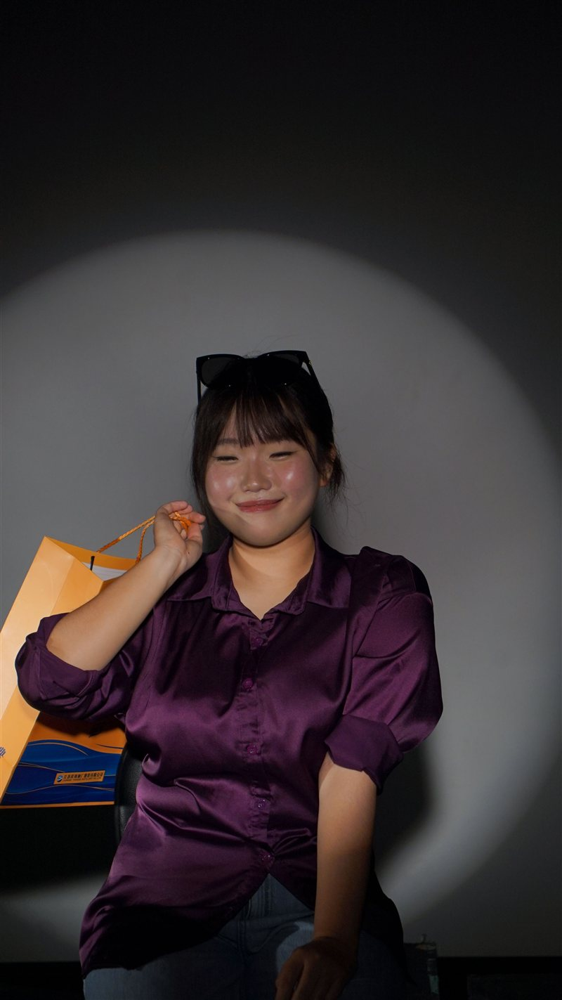
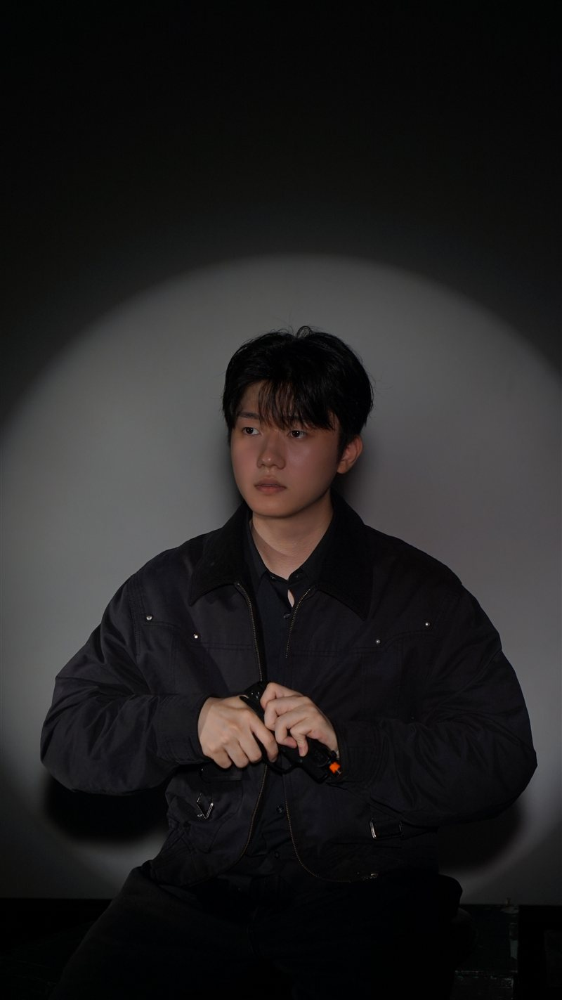
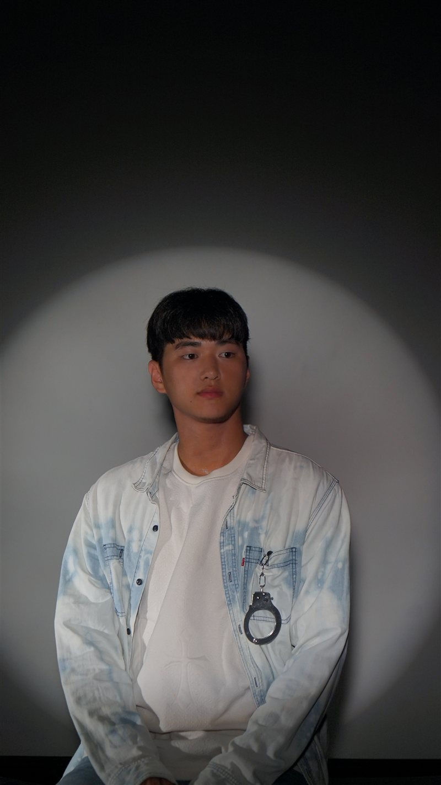
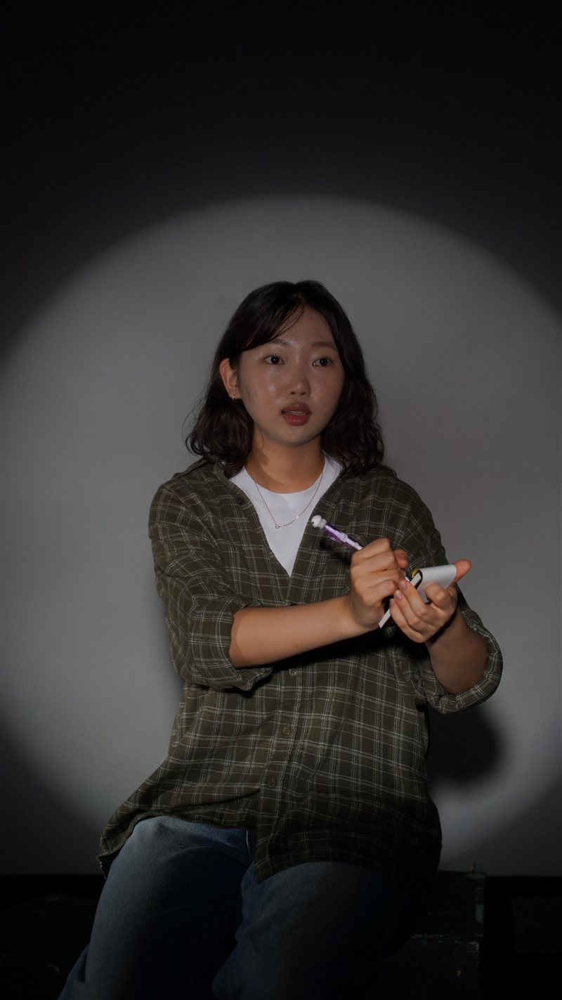
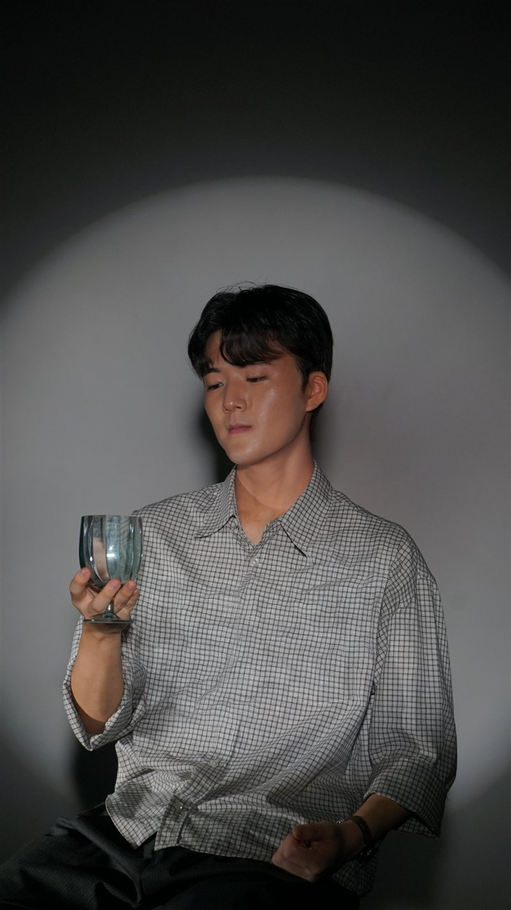
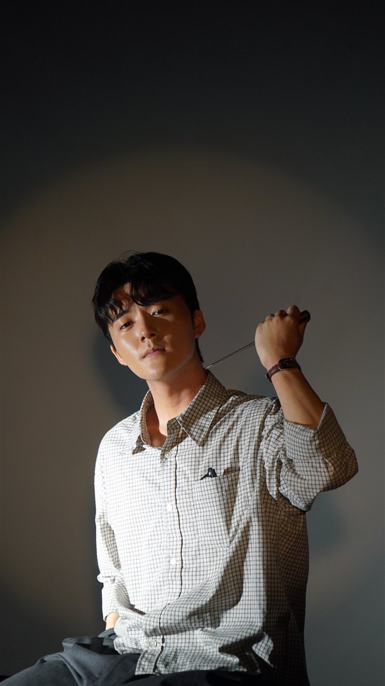
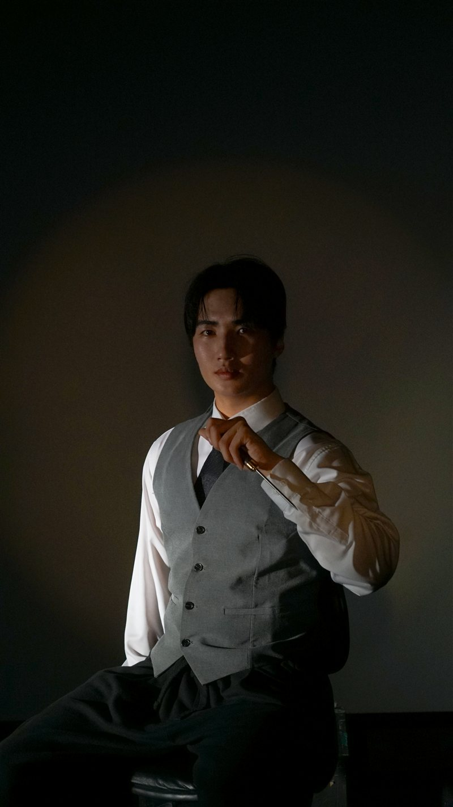

그곳에 있던 모두가 용의자였다.
폭우가 쏟아지던 밤.
게스트하우스의 소유주 최광조가 자신의 방에서 살해된 채 발견된다.
현장에 있던 사람들은 모두 피해자와 악연으로 얽혀 있었고, 서로의 증언은 조금씩 엇갈린다.
과연 누가 진실을 숨기고 있는가. 이제, 범인을 지목할 시간이다.







《캐치킬러》는 세종극회의 제 90회 여름 정기공연으로, 관객이 직접 사건을 추리하고 범인을 지목하는 참여형 추리극입니다.